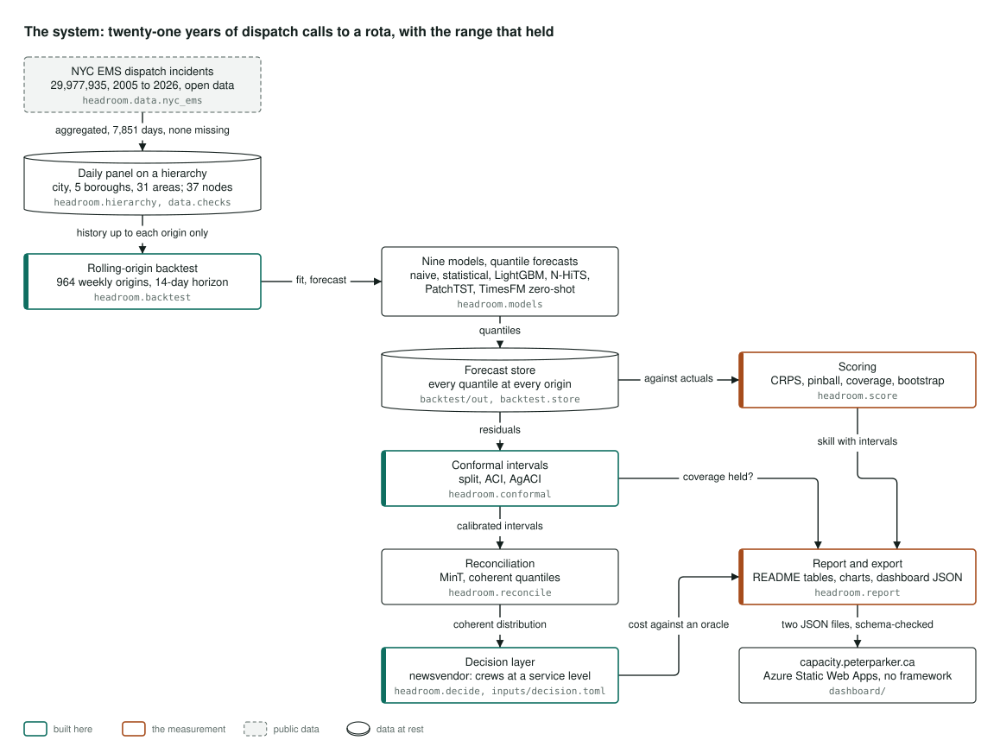
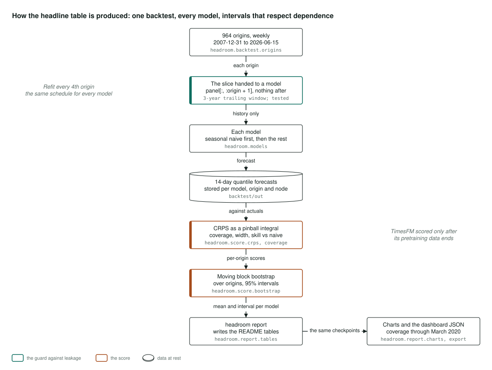
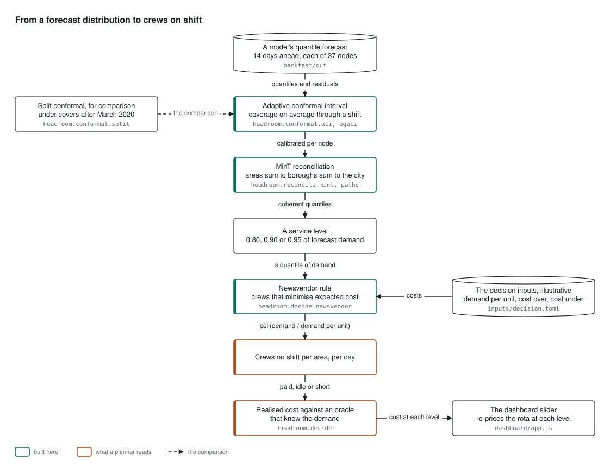

Architecture
How it's built
How the forecasting backtest and staffing layer behind this dashboard are built, in three pictures. Select a diagram to open it full size.
The system

The data is twenty-one years of New York City emergency medical dispatch incidents, published as open data. It is turned into a daily count for the city, each borough and each dispatch area, 37 series in all, and checked: not a single day is missing.
Nine forecasting models then go through the same test. They range from the simplest, "same as this day last year", through the classic statistical models, a gradient-boosted model, two neural networks and a pretrained foundation model used as it comes. At each point in the past, each model sees only the history before that point and forecasts a full range of outcomes, not just one number. Every forecast is stored.
The forecasts are scored against what actually happened, with intervals on every score. They are then wrapped in ranges that are guaranteed to hold a stated share of the time, adjusted so the areas add up to the boroughs and the boroughs to the city, and finally priced into crews per area per day at a chosen service level.
One command writes the README's tables and charts, and exports the same numbers to this dashboard, which uses no framework and makes no request outside the page. All of it runs on an ordinary laptop CPU.
Where it lives: headroom.data.nyc_ems, headroom.hierarchy, headroom.backtest, headroom.models, headroom.score, headroom.conformal, headroom.reconcile, headroom.decide and headroom.report.
How the headline table is produced

The test replays the past one week at a time. On each of 964 Mondays, from the end of 2007 to June 2026, a model is allowed to know everything up to and including that day, and nothing after it. It sees the three years before, and a test checks that rule at every one of those dates.
Models are retrained every fourth week on the same schedule for all of them, so the cheap models get no advantage the expensive ones were denied. Each model forecasts the next 14 days as a full range of outcomes, and the forecasts are stored.
The scores then compare each stored forecast with what happened. The main score rewards a forecast for being both close and honest about its uncertainty, and every model is compared with the simplest one. The 95% intervals come from resampling whole blocks of weeks, because neighbouring weeks are not independent. The foundation model is only scored on dates after its own training data ends, so it cannot be scored on history it has already seen.
One command writes the README's tables, charts and this dashboard's data from the same stored forecasts, including the chart of how well each range held through March 2020.
Where it lives: headroom.backtest.origins, headroom.score.crps, headroom.score.coverage, headroom.score.bootstrap and headroom.report.
From a forecast distribution to crews on shift

This is what the dashboard's service-level slider does.
A model's forecast for each of the 37 series is wrapped in a range that adapts as it goes, so it keeps holding its stated share of the time even when demand shifts suddenly. The simpler fixed version of that range stopped holding after March 2020, which is why the adaptive one is used. The forecasts are then adjusted so that the areas add up to the boroughs and the boroughs to the city.
A service level, 80, 90 or 95 percent of forecast demand, picks a point in that range. A classic staffing rule then turns it into crews per area per day, weighing the cost of a crew sitting idle against the cost of a crew that is missing. Those costs and the demand each crew can handle are illustrative, set out in one file so the arithmetic has something to run on, and are meant to be replaced with a real service's figures.
Finally, each method's rota is priced against a perfect one that knew the demand in advance, and the slider re-prices the rota at each service level that was measured.
Where it lives: headroom.conformal.aci, headroom.conformal.agaci, headroom.conformal.split, headroom.reconcile.mint, headroom.decide.newsvendor and inputs/decision.toml.